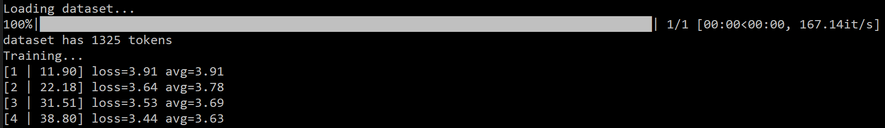

Introduction
This tutorial will teach you how to get a pretrained GPT-2 model to train on a poetry dataset to try and create samples that are similar to the ones that we train it on.
Although this tutorial shows you how to train it on poetry you are able to train this model on any plain text.
Some prequisite knowledge is required to follow this tutorial. It is assumed that you have python installed as well as Anaconda (Or whatever program/method you use for creating
virtual environments). It is also assumed that you have some sort of IDE or way of editing/writting python code. if you dont know what any of the previously stated things are I sugest
looking into them before starting this tutorial.
This tutorial is a combination of the walkthrough of the tutorial from Medium.com
and some parts of the Gwern website.
Step 1 - Get a clone of the project
The first step in this tutorial is to get the GIT clone of the project. I used Visual studio code to import a clone of the project and saved it to a folder in my desktop for easy access.
So make sure you have GIT installed from the following link: https://git-scm.com/downloads
Although it may differ for your IDE to clone a project in visual studio code go to the view tab and select command palette:

Or press Ctrl+Shift+P
Next type this into the command palette:

And then the following link into the Repository URL: https://github.com/nshepperd/gpt-2.git
Make sure you save it somewhere that you can easily access.
You should now have a clone of the project which consists of a folder called gpt-2.
Unless you are using GPU training the next step is to copy the files named encode.py and train.py into the src folder.
Step 2 - Setup python in a virtual environment
As tensor flow has not been updated for python 3.8.x we have to use python 3.7 for using it. To help me with creating virtual environments and other management I will use Anaconda navigator.
After installing anaconda x64 I opened the navigator to the main menu.

Next I selected the create new environment button and created an environment with python 3.7

Create an environment in anaconda and make sure you have python working in it by typing this into the cmd console:
pyhton --version
You should get “Pyhton 3.7.x” in the console (x dependant of the version of 3.7 you are using)
If you are getting an error about python not being recognised follow this fix otherwise you can ignore this part:
If you are getting the following error

Then we need to define a python path for your system. To do this find where you have installed python. The easiest way to do this is to type python into your search bar and go to the source folder:


Copy the directory path of this folder. We will use this to point your computer to this folder when we are using python in cmd.
Next search for “Edit the system environment variables” in your search bar or find it in the control panel.
Go to environment settings:

And find the path variable in the system variable list

Click edit on this variable and then new to create a new variable.

This new variable should be the file path that you copied from earlier.
After doing this python should work in command line. You can check this by typing this into the CMD console.
pyhton --version

Step 3 – install all the needed modules
Now we need to install a few modules. The modules we need to install are:
- Fire 0.1.2
- Regex 2017.4.5
- Requests 2.21.0
- Tqdm 4.31.1
- Numpy
- Tensorflow 1.14 (This is important any other version of TF will not work must be 1.14)
- toposort
To install the modules, we use the following command in your venv command console:
pip install *Name of module*
You DO NOT need to put in the version of the module just the name, except for Tensorflow where you need to use this command:
pip install tensorflow==1.14
To make sure you have all the modules installed use this command to check your modules
pip list
Step 4 – installing the model
Now we need to install the NN model that we will use for generating out poetry
To do this we first need to change our command line destination to inside our project folder.
To do this go to where you downloaded the GIT clone and copy the path to the folder that holds the src folder.
We can then change the directory by typing the following into the Venv command line:
cd *Path*
your command line should now look similar to this:

Now that we are in this folder, we can run the download model script. To do this we use this command:
python download_model.py 117M
To ensure this has been downloaded check the project folder. It should now have a new folder inside of it called models.
Step 5 – creating a training dataset
As we are creating our own data set you can use any plain text (in English) to train the model.
I will be using poetry however for this tutorial. I will show you the formatting of the dataset so you can create your own to train the model for different types of content.
To create this data set, create a normal notepad .txt document and put in your wanted text. Separate each different text with the following:
<|endoftext|>
Here is an example of what the break between text should look like should look like:
……….
There are beautiful beeches down beyond the hill.
Will you always stand there shivering?
<|endoftext|>
Water ruffled and speckled by galloping wind
Which puffs and spurts it into tiny pashing breakers
Dashed with lemon-yellow afternoon sunlight.
The shining of the sun upon the water
Is like a scattering of gold crocus-petals
In a long wavering irregular flight.
………..
Step 6 – encoding the dataset for training
In step 1 we copied the encode.py and train.py file into the source folder so we need to change
a few lines of code for the following step to work otherwise it wont be able to find the a directory and will throw an error during encoding.
Open up the encoder.py (not encode.py) and go to the get_encoder definition:

We need to give the correct path to the open command as a raw string.
To do this replace ‘models’ with the path to the models folder that is in the project folder. Then put an r before the apostrophe:

Once we have done this we can go back to our command line and Cd into the src folder. We then run this command:
pyhton encode.py *Name of data set*.txt *Name of data set*.npz
For the name of the data set just put in the name of the .txt file. The .npz file can have a different name if you want.
Step 7 – training the model
Now we need to train our model so we can start producing samples. Before we do this there’s a bit of code we need to adjust so the model can find
the correct directory’s and then we need to create a few directory’s for the model to use.
In the src folder add two new folders “Checkpoint” and “Samples”.
Now open the train.py file and go to lines 19 and 20:

Within these apostrophise put the root of your respective folders and then put an r before each one
(This parses it to a raw string so the path will work) so for me it would now look like this:

Next we need to go to the main method (it starts at line 72) and put in the path to our model’s folder.
This is the folder that was created when you downloaded the model in the earlier steps. The line we need to add this is line 76:


The next place we need to add this path is in some code around lines 160


The last place we need to add the root is around line 200


Now the last step is to execute the training command, it is the following:
python train.py --dataset *Name of dataset*
And that’s it. If you get the following you have done everything correctly:

You will most likely have lots of errors in your command window but as long as you get to what is displayed above you can ignore any errors.
To stop training you must have the window selected and press Ctrl+C.
To continue to train your model you can simply repeat this command and it will resume from where it was stoped:
python train.py --dataset *Name of dataset*